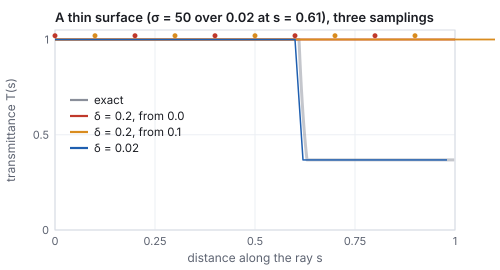
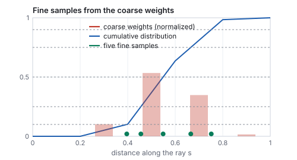
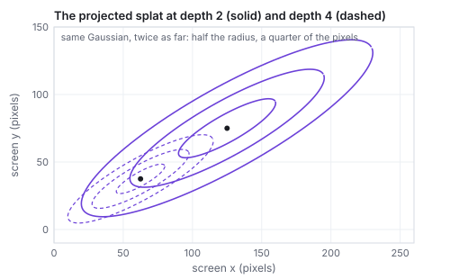
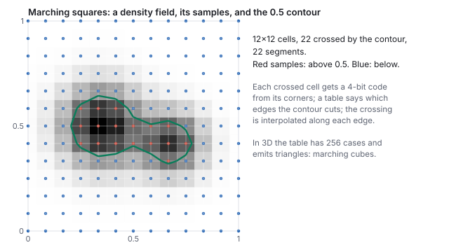

This chapter links to the course’s interactive demos and to original papers on the open web, and it uses MathJax for its formulas. Read it through the course website (or download the file and open it in a browser); a Canvas inline preview will reach neither the demos nor the math. All chapters.
Learned Scenes
Rather than learn the distribution of all images, a learned scene learns one place from its photographs and renders it from viewpoints the camera never saw. This chapter states the neural radiance field and its volume-rendering integral, derives that integral from the physics of absorption so that its discrete form is not a recipe, runs it by hand along one ray, shows what goes wrong when the ray is sampled too coarsely and how a second, importance-sampled pass fixes it, and explains why Gaussian splatting replaced the network with explicit primitives and got real-time rates. For one splat it builds the covariance from a scale and a rotation, projects it to the screen through the Jacobian of the perspective divide, evaluates its view-dependent color from spherical harmonics, and blends it with two others on one pixel; it then says how a splat scene is trained and grown. A short section returns from fields to the meshes of the rest of the text by marching squares, and the chapter closes by setting both representations against meshes with the numbers their papers report, and against diffusion models, which they meet in score distillation and ControlNet.
- A scene as a function
- Rendering a field: the volume integral
- Sampling the ray: coarse to fine
- Training through the renderer
- 3D Gaussian splatting
- One splat: shape, projection, color
- Training a splat scene
- From a field back to a mesh
- Learned scenes against meshes, and against learned images
- The papers
- Exercises
1 · A scene as a function
The other half of the neural era learns one scene from its own photographs and renders it from viewpoints the camera never saw. A neural radiance field (NeRF, Mildenhall et al. 2020) represents the scene as a function, a small network \(F_\theta : (\mathbf{p}, \mathbf{d}) \mapsto (\mathbf{c}, \sigma)\) from a 3D point and a viewing direction to a color and a density, with no mesh anywhere. Density is how much a ray passing through \(\mathbf{p}\) is attenuated per unit length: zero in empty air, large inside a leaf. This is the function view of the image-space chapter applied to a volume rather than a picture plane, and the network is exactly the approximator of the networks chapter: eight layers of 256 units, a few hundred thousand weights, one scene per network.

One detail makes the function view work in practice. Fed raw coordinates, a small network produces blurry fields, because a perceptron is biased toward smooth functions and a scene has sharp edges. NeRF first maps each coordinate through fixed sines and cosines of increasing frequency,
\[ \gamma(p) \;=\; \big(\sin(\pi p), \cos(\pi p), \sin(2\pi p), \cos(2\pi p), \dots, \sin(2^{L-1}\pi p), \cos(2^{L-1}\pi p)\big), \]and feeds the network \(\gamma\) of every coordinate instead. This is the cosine basis of the image-space chapter again: the network now combines basis functions of many frequencies and can be sharp.
| \(k\) | frequency \(2^k\) | \(\sin(2^k \pi p)\) | \(\cos(2^k \pi p)\) |
|---|---|---|---|
| 0 | 1 | 0.809 | 0.588 |
| 1 | 2 | 0.951 | −0.309 |
| 2 | 4 | −0.588 | −0.809 |
| 3 | 8 | 0.951 | 0.309 |
2 · Rendering a field: the volume integral
A pixel is made by marching a camera ray \(\mathbf{r}(s) = \mathbf{o} + s\,\mathbf{d}\) through the field and compositing front to back. The formula comes from one physical fact.
The discrete form is exact for a piecewise-constant density: on a slab of constant \(\sigma_i\) the transmittance falls by exactly \(e^{-\sigma_i\delta_i}\), and the light emitted along the slab that reaches its front is \(\int_0^{\delta_i} \sigma_i e^{-\sigma_i u}\,du\;\mathbf{c}_i = (1 - e^{-\sigma_i\delta_i})\,\mathbf{c}_i = \alpha_i\mathbf{c}_i\). So \(\alpha_i\) is the opacity of the \(i\)-th slab, \(T_i\) is how much of the ray is still unblocked when it reaches the slab, and \(T_i\alpha_i\) is the slab’s weight in the final color: it is the alpha compositing of the texturing chapter, run front to back. The weights sum to \(1 - T_{N+1}\); whatever is left is the background.
| \(i\) | \(\sigma_i\) | \(\mathbf{c}_i\) | \(\alpha_i = 1 - e^{-0.2\sigma_i}\) | \(T_i\) | \(w_i = T_i\alpha_i\) |
|---|---|---|---|---|---|
| 1 | 0 | (air) | \(1 - e^{0} = 0\) | 1 | 0 |
| 2 | 0.5 | gray (0.5, 0.5, 0.5) | \(1 - e^{-0.1} = 0.095\) | 1 | 0.095 |
| 3 | 4 | red (0.9, 0.2, 0.2) | \(1 - e^{-0.8} = 0.551\) | \(1\times0.905 = 0.905\) | 0.498 |
| 4 | 8 | red (0.9, 0.2, 0.2) | \(1 - e^{-1.6} = 0.798\) | \(0.905\times0.449 = 0.407\) | 0.325 |
| 5 | 1 | blue (0.2, 0.3, 0.9) | \(1 - e^{-0.2} = 0.181\) | \(0.407\times0.202 = 0.082\) | 0.015 |

- The sum rule. \(T_6\) is also \(\exp\big(-0.2\,(0 + 0.5 + 4 + 8 + 1)\big) = e^{-2.7} = 0.067\): the product of the five survivals is the exponential of the summed optical depth, which is how the continuous \(T(s)\) and the discrete product agree.
- Exactness for piecewise-constant density. Split sample 3’s slab (\(\sigma = 4\), \(\delta = 0.2\)) into two slabs of \(\delta = 0.1\): each has \(\alpha = 1 - e^{-0.4} = 0.330\), and the pair together block \(1 - (0.670)^2 = 0.551\), the same as the single slab. Refining a slab whose density really is constant changes nothing; refining a slab whose density is not (Section 3) changes everything.
- Expected depth. The weights are a distribution over the ray (after dividing by their sum, 0.933), so they give a depth: \(\sum_i w_i s_i / 0.933\) with \(s_i = 0.2\,i\) is \(0.656\), between samples 3 and 4. A NeRF produces a depth map for free this way, and it is what ControlNet (the diffusion chapter) can be handed.
3 · Sampling the ray: coarse to fine
The discrete sum is only as good as the sample spacing, and a real scene is mostly empty space with thin surfaces in it. A fixed spacing that is fine enough to hit every leaf wastes hundreds of network evaluations per ray on air; a coarse one misses the leaf.

NeRF’s answer is hierarchical sampling: march a coarse set of samples, treat their weights \(w_i\) as a distribution along the ray, and draw a second, fine set of samples from that distribution by inverting its cumulative sum, so that the fine samples cluster where the coarse pass found density. Two networks (coarse and fine) are trained together, and the final color uses both sets. It is the importance sampling of the ray-tracing chapter, with the coarse pass supplying the importance.
| \(u\) | 0.10 | 0.25 | 0.50 | 0.75 | 0.90 |
|---|---|---|---|---|---|
| slab | 2 | 3 | 3 | 4 | 4 |
| fine sample \(s\) | 0.396 | 0.455 | 0.549 | 0.665 | 0.752 |

4 · Training through the renderer
Every operation above is differentiable: the exponentials, the products, the sum, and the network itself. So the whole march is a function from the weights \(\theta\) to a pixel color, and training is the march run backwards: gradient descent on \(\theta\) until rendered rays match the training photographs,
\[ \min_\theta \sum_{\text{photos}}\;\sum_{\text{pixels}} \big\| C_\theta(\mathbf{r}) - C_{\text{photo}}(\mathbf{r}) \big\|^2 . \]The camera poses of the photographs are known (recovered beforehand by structure from motion, the capture era of the history chapter), so each pixel of each photograph defines a ray with a known answer: the unprojection of the interaction chapter, once per pixel per photograph. Nothing tells the network where the surfaces are; it discovers that putting density there makes many rays from many viewpoints agree with their photographs, and that is the only way to make them agree. It is slow: hundreds of network evaluations per ray, millions of rays, and the original paper reports one to two days on a single GPU per scene and about thirty seconds per \(800\times800\) frame to render. A batch of 4,096 rays per step, drawn at random from all photographs, is what the Adam optimizer of the networks chapter sees.
What training cannot see, it cannot fix. A region no photograph looked at is unconstrained and fills with whatever density the network finds convenient, which is the source of the floaters, wisps of density hanging in the air of a reconstructed room; and a scene that changes between photographs (a person walking through, the sun moving) is inconsistent with itself and comes out as a smear. Later work adds per-image appearance codes for the lighting, transient-object handling for the people, and priors on density to suppress the floaters.
5 · 3D Gaussian splatting
3D Gaussian splatting (Kerbl et al. 2023) keeps the learn-from-photos idea and replaces the network with millions of explicit primitives: anisotropic Gaussians, each with a position \(\boldsymbol\mu\), a \(3\times3\) covariance \(\Sigma\) (its size and orientation), an opacity, and a view-dependent color. Rendering projects each Gaussian onto the screen, where it becomes a 2D Gaussian with covariance \(\Sigma' = J W \Sigma W^\top J^\top\) (\(W\) the view rotation, \(J\) the Jacobian of the projection), sorts by depth, and blends front to back with the same \(C = \sum_i T_i\alpha_i\mathbf{c}_i\) as above, with \(\alpha_i\) now the Gaussian’s opacity times its falloff at the pixel. That is a rasterizer (the rasterization chapter), so it runs in real time, and it needs the course’s view and projection matrices to do it.

| splat | falloff at \(u\) | \(\alpha_i\) | \(T_i\) | \(w_i\) | color |
|---|---|---|---|---|---|
| 1 (red, front) | \(e^{-0.5} = 0.607\) | 0.485 | 1 | 0.485 | (0.85, 0.2, 0.2) |
| 2 (blue) | \(e^{-0.255} = 0.775\) | 0.542 | 0.515 | 0.279 | (0.2, 0.45, 0.9) |
| 3 (yellow, back) | \(e^{-7.03} = 0.001\) | 0.001 | 0.236 | 0.000 | (0.95, 0.75, 0.15) |

media/gsplat/ATTRIBUTION.md.
6 · One splat: shape, projection, color
The previous section took the screen-space covariance as given. Here is where it comes from, for one splat, with every matrix written out.
6.1 Shape: a scale and a rotation
A \(3\times3\) covariance must be symmetric and positive definite, which gradient descent on its nine entries does not preserve. The splatting paper instead stores a scale vector \(\mathbf{s}\) and a rotation quaternion \(\mathbf{q}\) (the rotation chapter) and builds \[ \Sigma = R\,S\,S^\top R^\top, \qquad S = \mathrm{diag}(\mathbf{s}),\; R = R(\mathbf{q}), \] which is positive definite for any \(\mathbf{s}\) and \(\mathbf{q}\): the TRS factorization of the affine chapter without the translation, applied to the unit sphere.
6.2 Projection: the Jacobian of the perspective divide
The projection of the viewing chapter is not affine, so a Gaussian does not project to a Gaussian exactly. Splatting linearizes it at the splat’s center. With the splat at view-space position \(\mathbf{t} = (t_x, t_y, t_z)\) and focal length \(f\) in pixels, the screen position is \((f t_x/t_z, f t_y/t_z)\) and the Jacobian of that map is \[ J = \begin{pmatrix} f/t_z & 0 & -f t_x/t_z^2 \\ 0 & f/t_z & -f t_y/t_z^2 \end{pmatrix}, \] so that \(\Sigma' = J\,W\Sigma W^\top J^\top\), with \(W\) the view rotation (the identity if \(\Sigma\) is already in view space).

6.3 Color: spherical harmonics
A leaf looks different from different sides, and a splat’s color must too. Instead of a network, each splat stores the coefficients of its color in the spherical harmonic basis, the Fourier basis on the sphere of directions: \(\mathbf{c}(\mathbf{d}) = \sum_\ell\sum_m \mathbf{k}_{\ell m}\,Y_{\ell m}(\mathbf{d})\). Degree 0 is a constant; degree 1 adds three functions linear in the direction, \(0.4886\,(y, z, x)\); the splatting paper uses degree 3, 16 functions, 48 coefficients per splat for RGB.
7 · Training a splat scene
Training is unchanged in spirit from NeRF: the rasterizer is differentiable with respect to every Gaussian’s position, scale, rotation, opacity and color, so gradient descent moves, stretches and recolors the Gaussians until the renders match the photographs. What is new is that the number of Gaussians changes during training.
| ingredient | what the paper does |
|---|---|
| initialization | one Gaussian per point of the structure-from-motion point cloud that came with the camera poses |
| loss | \((1 - \lambda)\,L_1 + \lambda\,(1 - \text{SSIM})\) between the render and the photograph, \(\lambda = 0.2\) (SSIM as in the image-space chapter) |
| densification | every 100 iterations, from iteration 500 to 15,000: a Gaussian whose screen-space position gradient is large (above \(2\times10^{-4}\)) is cloned if it is small (under-reconstruction) or split into two smaller ones if it is large (over-reconstruction) |
| pruning | Gaussians whose opacity falls below a threshold are deleted; every 3,000 iterations all opacities are reset near zero so that floaters must re-earn their place |
| schedule | 30,000 iterations; spherical-harmonic degree raised one step at a time so that view dependence is learned last |
The bonsai above came out of such a run with about 240,000 Gaussians from an initial cloud of a few tens of thousands. The result is a list of primitives an engine can hold beside its meshes, sort with its own depth, and light only by what the photographs already contained.
8 · From a field back to a mesh
The rest of this text renders triangles, and a learned scene is often wanted as one. A density field defines a surface implicitly, as the set where \(\sigma\) crosses a threshold, and the algorithm that turns an implicit surface into triangles is marching cubes (Lorensen and Cline, 1987). Its two-dimensional version, marching squares, shows the whole mechanism.

The extracted mesh inherits the field’s faults: floaters become small disconnected shells, thin structures marched at a coarse grid vanish exactly as in Section 3’s pitfall, and the density threshold is a choice with no right answer for a fuzzy scene. Methods that train a signed-distance field instead of a density (NeuS, VolSDF) give cleaner surfaces at the cost of the volumetric look, and splat scenes have their own extraction routes. Extraction is where the two halves of this text meet: a scene captured as a function, delivered as the vertex and index arrays of the meshes chapter.
- Composite the five samples of Section 2 in eight lines, then change the fourth density to 80 and see the blue sample’s weight vanish:
const sig=[0,0.5,4,8,1],d=0.2;let T=1,w=[]; for(const s of sig){const a=1-Math.exp(-s*d);w.push(T*a);T*=1-a;} console.log('weights',w.map(x=>x.toFixed(3)),'T_end',T.toFixed(3),'sum',(w.reduce((a,b)=>a+b,0)).toFixed(3));Expected:weights [ '0.000', '0.095', '0.498', '0.324', '0.015' ] T_end 0.067 sum 0.933. - Decompose the projected covariance of Section 6 into its ellipse:
const S=[[1231.25,653.27],[653.27,477.25]];const tr=S[0][0]+S[1][1],det=S[0][0]*S[1][1]-S[0][1]*S[1][0]; const l1=tr/2+Math.sqrt(tr*tr/4-det),l2=tr/2-Math.sqrt(tr*tr/4-det); console.log('radii px',Math.sqrt(l1).toFixed(2),Math.sqrt(l2).toFixed(2), 'angle',(0.5*Math.atan2(2*S[0][1],S[0][0]-S[1][1])*180/Math.PI).toFixed(1));Expected:radii px 40.11 10.00 angle 30.0. - In the splat demo, orbit slowly around a leaf of the bonsai and watch its highlight move with you: that is Section 6.3’s spherical-harmonic color. Then widen the field of view: every ellipse shrinks by the Jacobian of Section 6.2, since \(f\) fell.
9 · Learned scenes against meshes, and against learned images
| mesh (the rest of this text) | NeRF | 3D Gaussian splatting | |
|---|---|---|---|
| the scene is | vertices, triangles, textures, materials | a network \(F_\theta\) | a list of Gaussians |
| authored by | a modeler, or a scanner plus cleanup | photographs and a day of optimization | photographs and half an hour of optimization |
| rendered by | rasterization, in a millisecond | ray marching, hundreds of network calls per pixel | rasterization of sorted splats |
| lighting | computed from lights and materials; relightable | baked into the view-dependent color; not relightable without further work | |
| editable | yes, vertex by vertex | with difficulty | splat by splat, coarsely |
| Mip-NeRF 360 benchmark, as reported by Kerbl et al. 2023 (Table 1) | not in the benchmark | Mip-NeRF 360: PSNR 27.69, about 48 h to train, 0.06 frames per second; Instant-NGP (base configuration): PSNR 25.30, about 6 min, 11.7 fps, 13 MB | PSNR 27.21, 41 min, 134 fps, 734 MB per scene |
The table’s last row is the reason splatting spread in a year: the same image quality as the best field, at a thousand times the frame rate, from a representation an engine can already draw. Its memory cost (hundreds of megabytes per room, against a few for a textured mesh) and its baked lighting are the open problems.
| Learned scene (NeRF, 3DGS) | Learned image (diffusion) |
|---|---|
| one scene, from its own photos | all images, from an archive |
| a camera you can move | no camera, no scene |
| renders new views of the same thing | samples new things |
| trained through a differentiable renderer (your \(V\) and \(P\) inside it) | trained by predicting noise; renders nothing itself |
| a function of 3D position (a field) | a function of a noisy image (a denoiser) |
| meets diffusion in score distillation | meets the pipeline in ControlNet on your depth buffer |
The two meet in the middle. Score distillation (DreamFusion) trains a field so that its renders please a diffusion model: the renderer of this chapter supplies the gradient path from a pixel back to the scene, and the denoiser of the diffusion chapter supplies the direction. ControlNet runs the other way: a depth buffer, which a NeRF (Section 2’s expected depth) or a splat scene or an ordinary mesh renderer produces for free, fixes the layout of a diffusion sample. In both, the graphics pipeline provides what the generative model lacks: a scene, a camera, and a place where geometry is a number you control.
10 · The papers
| Year | Paper | What it added |
|---|---|---|
| 1984 | Kajiya & Von Herzen, “Ray Tracing Volume Densities,” SIGGRAPH 1984 | the volume rendering integral in graphics |
| 1987 | Lorensen & Cline, “Marching Cubes,” SIGGRAPH 1987 | from a scalar field to triangles |
| 2020 | Mildenhall et al., NeRF | a scene as a learned field, rendered by the volume integral |
| 2022 | Müller et al., Instant-NGP | hash-grid encoding; seconds to train |
| 2022 | Barron et al., Mip-NeRF 360 | unbounded real scenes; the dataset the bonsai comes from |
| 2022 | Poole et al., DreamFusion | text-to-3D by score distillation |
| 2023 | Kerbl et al., 3D Gaussian splatting | learned scenes at real-time rates |